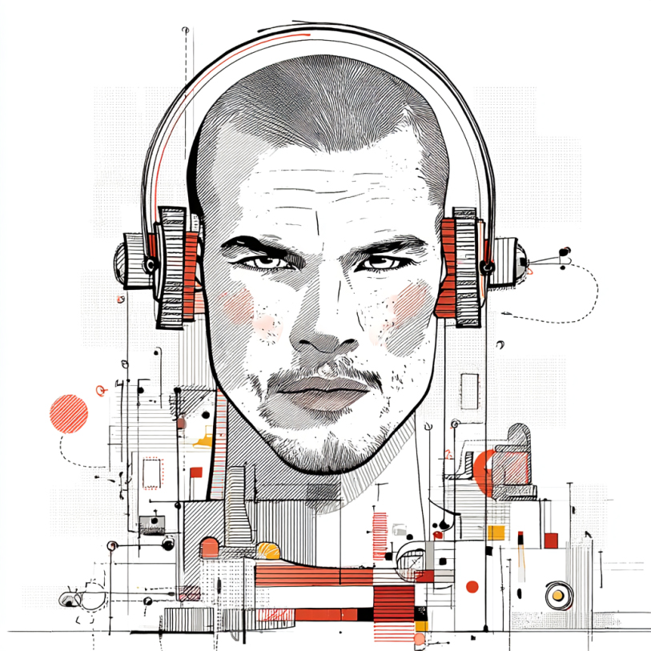

For three semesters I watched students and myself struggle with the same tools. Beautiful.ai, Canva, Gamma. Templates fought us. Layouts broke. The best presentations were built on Vercel, but even Vercel has limitations.
Prof. Nik Bear Brown saw this and decided to fix it. He built Brutalist: an AI-powered presentation tool where the content is the design.
One HTML file. No software. No templates. Open it in a browser and present.

The name comes from architecture. Brutalism started in the 1950s. Post-war Europe. Materials were scarce.
Architects built with raw concrete, left exposed. No decorative finish. No paint. No facade.
The French term was béton brut. Raw concrete. If a beam held up the ceiling, you saw the beam.
Brutalism was a reaction against ornamentation. Buildings before it were clean but still decorative. Brutalism stripped that away.
In art school they say "form follows function." Brutalism goes further: the function is the form. Nothing is hidden.
The name also connects to Art Brut, "raw art," coined by French artist Jean Dubuffet in the 1940s. Art made by outsiders who didn't follow the rules. Unpolished. Untrained. The expression was the point.
In the 2010s, designers applied the same philosophy to the web. Raw typography. Visible grids. No stock photography.
No rounded corners, no gradients, no "make it pretty" polish. The content is the design. The structure is visible.
If a page is built from HTML, it looks like HTML.
These presentations are built in Brutalist. One HTML file. No software. No templates. Open it in a browser and present.
Typography, space, and structure do all the work. Nothing decorates. Everything communicates.
You're engineers. The structure is the beauty. That should feel familiar.